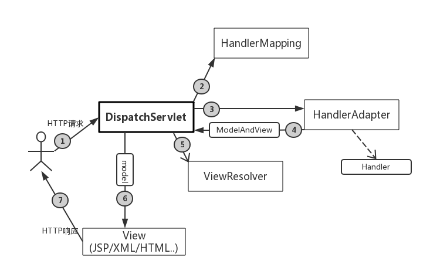

前言
前几天实验室大老板跑路到湖南大学了，实验室处于完全放羊的状态，我打算利用这个时间做一个短信验证登录的web项目来玩玩，也趁着这个机会，复习一下SpringMVC框架。现在我的状态就是一边看书整理，一边查阅资料，一边写项目代码，一边写博客。
概述
官方科普：SpringMVC是一种基于Java的实现了MVC设计模式的请求驱动类型的轻量级Web框架，它使用了MVC架构模式的思想，将web层进行职责解耦，分为控制器(Controller)，模型(Model),视图(View)。
通俗一点来说，用SpringMVC框架开发的web项目，前端与后端得到了一定的分离，实现了前端与后端代码的低耦合。所以对于SpringMVC而言，其最大的特点就是结构松散，比如我们几乎可以在SpringMVC中使用各类视图，包括JSON，JSP，XML等等。到底SpringMVC是如何做到这点的呢？接下来，看看SpringMVC的工作流程。
SpringMVC工作流程
SpringMVC是一种基于Servlet的技术，它提供了控制器DispatcherServlet和相关组件，这些SpringMVC的组件一起协调工作，完成对web请求的响应，如图所示：

- 客户端发出一个HTTP请求，Web服务器接收到这个请求。服务器检查HTTP请求的路径，如果匹配DispatchServlet的请求映射路径(web.xml中指定)，则Web容器将该请求转交给对应的DispatchServlet处理。
- DispatchServlet接收到这个请求后，将根据请求的信息(包括URL，HTTP方法，请求参数等等)以及HandlerMapping配置找到处理请求的处理器(Handler)。这里HandlerMapping可以简单理解为统一资源标识符URI与处理器Handler之间的映射关系。
- 找到请求的处理器之后，通过HandlerAdapter对Handler进行封装，再以统一的适配器接口调用Handler。因为为了更加灵活的编码和AOP增强功能，SpringMVC会给处理器加入拦截器，这样就可以在处理器执行前后加入自己的代码，于是就构成了一个处理器的执行链，所以SpringMVC提供了处理器适配器HandlerAdapter，帮助我们运行对应的处理器以及我们添加进去的拦截器。
- 处理器完成了请求的业务逻辑之后将返回一个ModelAndView对象给DispatchServlet，这里ModelAndView包含了视图的逻辑名和模型数据信息。
- 得到了ModelAndView之后，DispatchServlet借助ViewResolver视图解析器将逻辑视图转换为真实视图。
- 通过ViewResolver视图解析器得到了真实视图后，DispatchServlet使用这个真实视图对象对ModelAndView中的模型数据进行渲染。
- 最终DispatchServlet将渲染过后的视图对象返回给请求的客户端，客户端得到的响应可能是一个普通的HTML页面，也可能是一个JSON串，甚至是一张图片等等不同的视图类型。
以上就是SpringMVC响应请求的完整流程，这是一个松散的结构，SpringMVC框架已经完成了流程中大部分组件的开发，我们只需要熟悉这个流程，在这个框架的基础之上添加自己的逻辑代码就可以完成web项目的开发了。
SpringMVC初始化
SpringMVC的初始化分为Spring IoC容器的初始化与SpringMVC映射请求上下文的初始化,也就是在web.xml文件中定义的ContextLoaderListener与DispatcherServlet所做的初始化工作。
Spring IoC初始化
Java Web容器(Tomcat,Jetty等等)在生命周期中提供了ServletContextListener接口，通过这个接口可以在Web容器初始化和结束期中执行一定的逻辑。我们就是通过这个接口，完成对Spring IoC容器的初始化工作，同时也在结束期完成Spring IoC容器的回收。我们不需要自己实现这个接口，Spring已经为我们完成了这个接口的开发工作，只需要在web.xml文件中配置即可。在Spring IoC容器中，放置的往往是业务层与DAO层的对象，处理业务逻辑与数据访问工作。
映射请求上下文初始化
映射请求上下文的初始化是通过DispatcherServlet初始化完成的。首先，DispatcherServlet是一个可以载入容器的Servlet，那么Web容器对Servlet的初始化就是调用init()方法。有兴趣可以看看DispatcherServlet源码中init()方法，这里只介绍其初始化的大致流程。
DispatcherServlet在初始化的过程中，如果发现IoC容器没有初始化的时候就尝试先初始化IoC容器，然后再调用onRefresh()方法初始化SpringMVC的各个组件，也就是初始化SpringMVC的Web层的容器。在初始化SpringMVC的组件时，首先会通过反射查找并装配用户自己定义的组件，如果找不到，则装配在DispatcherServlet.properties配置文件中定义的默认组件。后续会详细介绍这些组件，很关键。
区别
从上面的介绍可以知道，SpringMVC要初始化是两个容器：Ioc容器(业务层容器)与映射请求容器(Web层容器)。一般而言，IoC容器中放置Servcie层与Dao层对象给映射请求容器提供业务处理服务与数据访问的服务，映射请求容器通俗来说，里面放置Controller层对象，用于统筹请求的处理，转发，响应等等。在代码中的实现来看，Ioc容器与映射请求容器是父子容器的关系，这样一来映射请求容器就可以单向访问Ioc容器中的对象,也就是说”Web层容器”可以访问”业务层容器”，而”业务层容器”无法访问”Web层容器”，实现了良好的解耦。
总结
本篇博客重点介绍了SpringMVC框架的整体工作流程与SpringMVC的初始化过程，后续将会详细介绍SpringMVC各个组件的功能以及组件的使用，从而还可以借助自定义组件完成我们预定的工作。